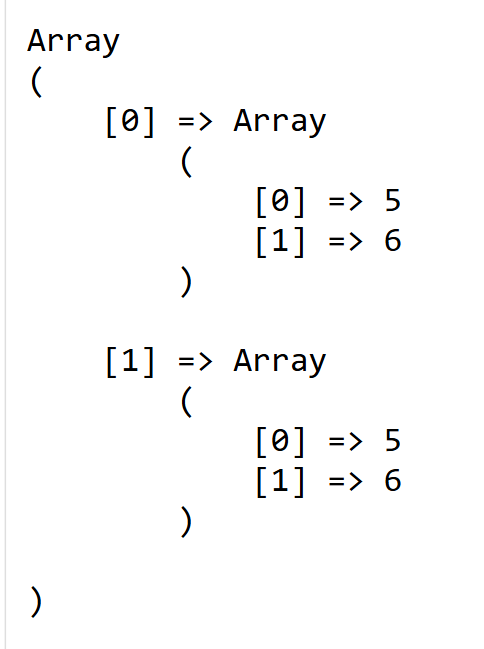
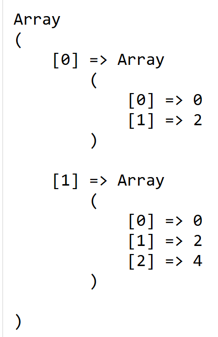
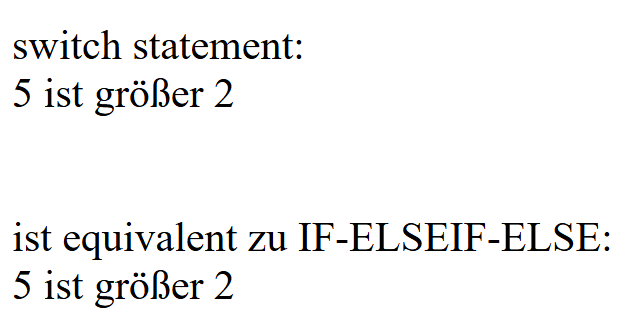
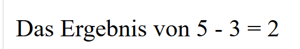
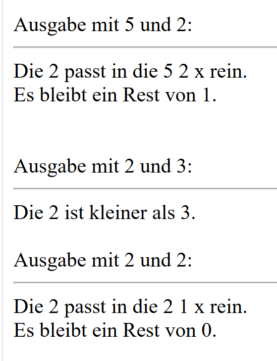
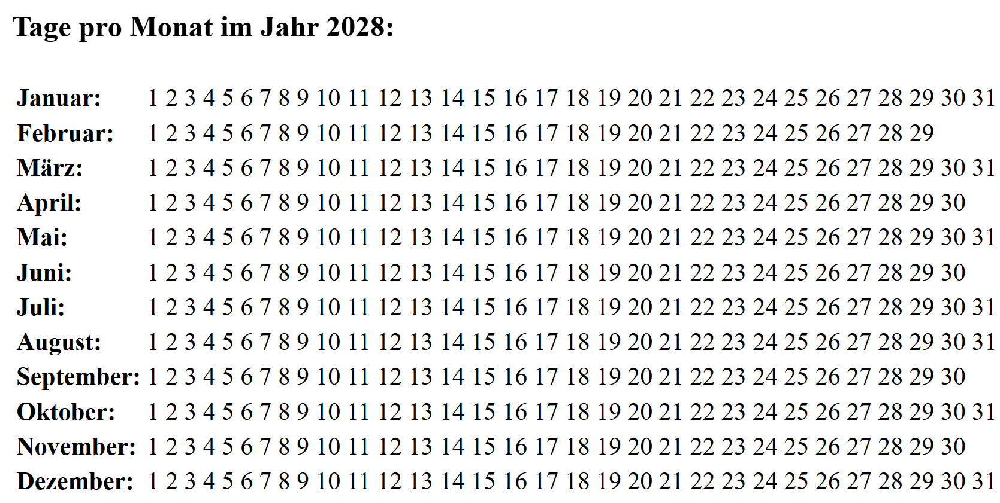

Themenfelder aus dem Curriculum:
Erwünschte Ausgabe mit zwei FOR-Schleife formulieren:


Erzeugen Sie folgende Ausgaben: Einmal mit dem SWITCH-CASE-Konstrukt und einmal mit IF-ELSEIF-ELSE-Verzweigung.

Erwünschte Ausgabe mit einer verschachtelte IF-ELSE-Verzweigung formulieren. Nutzen Sie folgende Vergleichsoperatoren: > , == , !=

Schreiben Sie eine Funktion ohne Übergabe- und ohne Rückgabewert. In dieser Funktion verwenden Sie die FOR-Schleife, um die Zahlen von 1 bis 10 auszugeben.
Die Funktion soll nicht ausgelagert werden.
zur Aufgabe
Schreiben Sie eine Funktion ohne Übergabe- und ohne Rückgabewert. In dieser Funktion verwenden Sie die WHILE-Schleife,
um die Zahlen von 1 bis 10 auszugeben. Die Funktion soll nicht ausgelagert werden.
zur Aufgabe
Schreiben Sie eine Funktion mit Parameter und ohne Rückgabewert. Verwenden Sie die fussgesteuerte DO-WHILE-Schleife,
um die Zahlen von 1 bis 10 auszugeben. Die Funktion soll nicht ausgelagert werden.
zur Aufgabe
Schreiben Sie eine Funktion mit Parameter und mit Rückgabewert. Verwenden Sie die IF-ELSE-Verzweigung, um 5 ist größer als 2 auszugeben.
Die Funktion soll nicht ausgelagert werden.
zur Aufgabe
Schreiben Sie eine Funktion, die nicht ausgelagert ist. In dieser Funktion nutzen Sie bitte ein verschachteltes IF-ELSE.
In der IF-Anweisung nutzen Sie bitte ein switch(), um zu selektieren.
In der ELSE-Anweisung nutzen Sie bitte eine IF-ELSE-Anweisung, um zu entscheiden, ob Werte gleich oder ungleich sind.
zur Aufgabe
Folgend erwünschte Ausgabe. Diesmal sollen Funktionen in dem Verzeichnis Funktion in der Datei funktion.php verortet werden.

Codieren Sie bitte nachfolgend Ausgabe.
